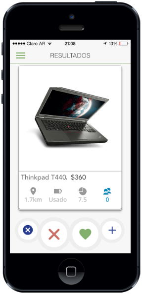

Plataforma
de interaccion comercial barrial

Lucas Kujawski
Lider de desarrollo
Problemas
“En las plataformas de comercio actuales todo esta lejos o en los barrios centricos”
“Poca interaccion entre vecinos”
“Tengo que pagar envio siempre”
“Los negocios del barrio venden menos por lo tanto los precios son mas elevados”
“Vender en la web tiene muchos pasos y si no pago estoy en los ultimos resultados”

Los tiempos estan cambiando
| Año | Negocios/Propiedad | Total de negocios | Nuevos |
|---|---|---|---|
| 2007 | 30% | 533 | 71 |
| 2010 | 23% | 489 | 90 |
| 2015 | 20% | 432 | 108 |
Fuente bajo flores: http://www.ssplan.buenosaires.gov.ar/dmdocuments/comuna_07.pdf
Los negocios
han disminuido
Cada vez hay mas recambio
que se traduce en menos exitos
Se esta haciendo cada vez mas dificil
Gratis
multiplataforma
Electrodomesticos, limpieza, merceria, libros, plantas, indumentaria, notebooks, pintor, articulos usados, etc...
a una busqueda de distancia


La aplicacion esta integramente pensada para que sea facil. El inicio de sesion se realiza conectandose a una red social, con un tap ya se pasa a la siguiente pantalla
Lo que da inicio al funcionamiento es la busqueda por texto, en la misma se muestran las tendencias de busquedas por la zona. Esto puede ser util para el vendedor que puede ver esto y publicarlo.
La plataforma esta diseñada para que con un deslizamiento se tome una decision binaria: Me gustaria tenerlo o no me gustaria.
Esto es por dos motivos, uno es para agilizar la decision de compra (la cual no representa un compromiso pues luego se puede cancelar) y para que sea mas facil comprar, sin rellenar campos ni siguiendo pasos.
Unas de las partes claves de la aplicacion es el filtro de cercania, el cual funciona como un slider y va desde los 0 hasta los 20km
Esto es ajustable y en nuestra planificacion, de la cual vamos a hablar mas adelante, propone empezar con menos posibilidad de distancia, asi el usuario esta restringido a comprar mas cercano y esto fomenta el comercio interno del barrio
Luego de que el vendedor acepta, le llega una notificacion al comprador. En la misma pantalla puede llegar a iniciar un chat, volver a ver la publicacion y tambien cancelar el pedido.